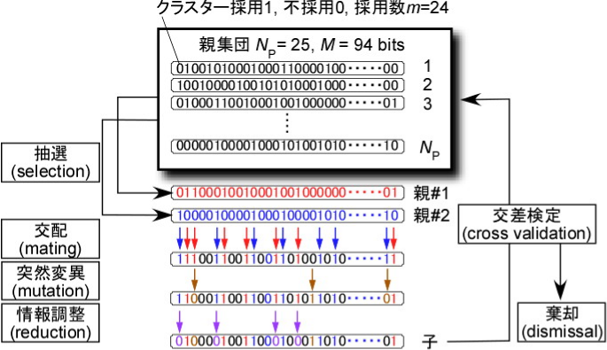

8. クラスター組み合わせの最適化¶
8.1. Theoretical backgrounds¶
遺伝的アルゴリズムによるクラスターの組み合わせの最適化 1 2
クラスターの組み合わせを最適化するとき，CV scoreを計算誤差の指標として用いることが一般的である．与えられたN種類のDFT構造とm種類のクラスターのもとで，CV scoreをできるだけ小さくするようにM種類のクラスターの候補の中から，m種類のクラスター(M > m)を選択する．その際に遺伝的アルゴリズムなど効率の良い最適化手法が用いられる．
遺伝的アルゴリズムでは，まずクラスターの組み合わせの親集団を作る．次に親集団から２つのクラスターの組み合わせ（親）を選び，２つの親を混ぜ合わせ（交配），新しいクラスターの組み合わせ（子）を作る．極小点に収束するのを防ぐため，少しだけ子の情報をランダムに変化させる（突然変異）．最後に，子のクラスターの数を調整する（情報調整）．子のCV scoreが親より良ければ親集団に追加し，悪ければ棄却する．このような交配を繰り返し，最も良いクラスターの組み合わせを探す．
{kind=link}
Bibliography
8.2. gasa¶
遺伝的アルゴリズムにより，交差検定スコア(CV score)が最小となるクラスターの組み合わせを探索する．
シミュレーティッドアニーリングにより，初期集団を作成することもできる．
シミュレーティッドアニーリングの部分のみ，OPENMPによるマルチスレッド計算に対応．
Input files
GASA.in
Output files
gasa.out
8.3. wgasa¶
遺伝的アルゴリズム，およびシミュレーティッドアニーリングにより，重み付き交差検定スコア(WCV score)が最小となるクラスターの組み合わせを探索する．
入力は，WEIGHTファイル以外 gasa と同じ．
Input files
GASA.in
Output files
wgasa.out
8.4. GASA.in¶
遺伝的アルゴリズムにより，クラスターの組み合わせを最適化する例．0-5番のクラスターを必ず組み合わせに含め，6-52番のクラスターの中から5個選ぶ．:
NLOOP = 0 # for genetic algorithm
BASECLUSTER = 0 1 2 3 4 5
NPOP = 25
NELITE = 1
NALLCLUSTER = 53
MININDEX = 6
MAXINDEX = 52
NCLUSTER = 5
MAXGENE = 300
PMATING = 0.9
PMUTATION = 0.03
simulated annealingによりクラスター組み合わせの初期集団を作成し，遺伝的アルゴリズムによりクラスターの組み合わせを最適化する例．0-5番のクラスターを必ず組み合わせに含め，6-52番のクラスターの中から5個選ぶ．:
NLOOP = 100
TEMPINIT = 1
TEMPFINAL = 0.001
TEMPMUL = 0.9
BASECLUSTER = 0 1 2 3 4 5
NPOP = 25
NELITE = 1
NALLCLUSTER = 53
MININDEX = 6
MAXINDEX = 52
NCLUSTER = 5
MAXGENE = 300
PMATING = 0.9
PMUTATION = 0.03
8.4.3. MININDEX tag, MAXINDEX tag¶
遺伝的アルゴリズムにより探索する範囲を指定． MININDEXはクラスターの番号の最小値，MAXINDEXは最大値．
Default : MININDEX = 0, MAXINDEX = NALLCLUSTER - 1
Example : MININDEX = 5
Example : MAXINDEX = 52
8.4.4. BASECLUSTER tag¶
クラスターの組み合わせに必ず含めるクラスターの番号．
Default : empty
Example : BASECLUSTER = 0 1 2 3 4 5
8.4.5. EXCLUSTER tag¶
遺伝的アルゴリズムにより探索する範囲から除くクラスターの番号．
Default : empty
Example : EXCLUSTER = 15 23 34
8.4.10. NLOOP tag¶
simulated annealingの各温度におけるステップ数．遺伝的アルゴリズムのみを行う場合，0に設定する．
Default : 0
Example : NLOOP = 100
8.4.11. TEMPINIT tag, TEMPFINAL tag¶
simulated annealingの初期温度と最終温度．
Default : none
Example : TEMPINIT = 1
Example : TEMPFINAL = 0.001
8.4.12. TEMPMUL tag¶
simulated annealingにおける温度設定の指数関数の底．0から1の値を指定する．
Default : none
Example : TEMPMUL = 0.9